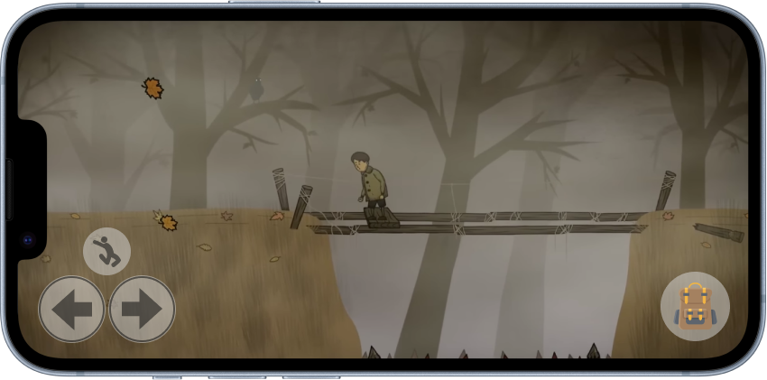
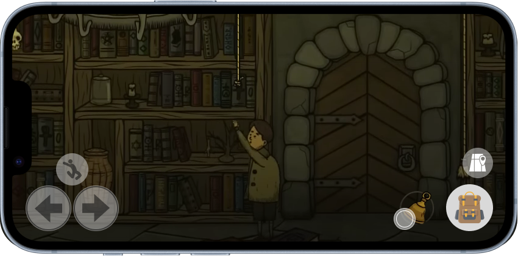

Welcome to Creepy Tale on iPhone!
This guide takes you through the design rationale, focusing on the new UI elements crafted for various game systems adapted from the original PC version. You’ll also get a chance to explore the design and interact with the prototype. Enjoy the journey!
Gesture & Area in Screen
The initial step prioritizes research on finger gestures and screen areas in shaping the mobile gaming experience. The non-user research highlights that using the number of fingers is crucial to deciding on the gaming experience in a mobile game.
Using one or two fingers on each hand is ideal for effective accessibility and engagement when playing a mobile game. While single-finger gestures are recommended for ease of execution.

For the iPhone version of Creepy Tale, players are required to use only one finger on each hand for all systems and interactions, keeping it simple and easy to play around.
Control Design
The gamer stance is a control style where players hold the device with both hands and use their thumbs for input, offering intuitive and precise control for actions and traversal. Creepy Tale will use this as a reference for its design.
Based on the article by Telfer (n.d.) about game stances and the graph below designed by Fong et al. (n.d.), illustrates the most easily accessible, medium, and hard-to-reach areas for mobile gamers with a game stance gesture.

The control design primarily focuses on the traversal system, inventory system, and an accessible map optimized for mobile screens, with all elements developed based on research conducted on porting.
Left Thumb Control:
- Traversal System:
- Movement: A control scheme is positioned on the left bottom of the screen, aligning with gaming controllers. This control allows characters to move left and right.
- Jump: The jump button is placed at the top of the movement but still within the easy accessible zone.
- Climb: Tap on jump, and movement will trigger the climb feature, allowing the player to move upward.

Right Thumb Control:
- Inventory: An inventory placed at the bottom right, with a collapsible menu that players can expand when tapping on the inventory.
- Map: Specifically designed for the mobile version, the map allows players to toggle between a single-room view and a multi-room view, enabling seamless switching between a compact and expanded layout.
Action Design
Those gestures that player use to take actions in the game are primarily used in Creepy Tale: tap, slide, double tap, and drag. Each gesture will be introduced in the following sections, followed by the designs and prototype.
Tapping
Interacting with objects or performing actions involves tapping to pick up an item, tapping on a door to open or close it, and tapping to activate a hidden mechanism. An icon will be displayed to intuitively guide the user to tap on the hidden mechanism.
The gear icon refers to open for more details, take the player to enter a new window which they can always close, and play around with the gaming elements.

Players can hide from the enemy if there is an object with an eye on the top; tap the eye to hide, and no one will be able to see.


Sliding
Triggering directional movement interactions involves sliding left or right to move items or mechanisms in front of the character. However, this differs from tap and drag, as sliding cannot control the object to a specific location; it functions more like operating a switch.

Double Tapping
Open the inventory and double-tap on a specific item to use it. The action will only trigger if the player is positioned at the correct puzzle-solving mechanism; otherwise, double-tapping will have no effect.

Tapping and Dragging
This gesture is used to trigger directional movement, allowing players to place objects at specific locations. Intuitive icons are designed to guide players and enhance their understanding of these interactions.
Conclusion
The design adaptations for Creepy Tale on iPhone seamlessly blend intuitive controls, responsive UI elements, and accessibility considerations for smaller screens, ensuring an enjoyable gaming experience for all players!
Image and Icon References
Deqaf Studio. (2020). Creepy Tale [Video game].
Fong, J., Commisso, R., & DaRienzo, G. (n.d.). Game stance and finger accessibility areas [Illustration].
Freepik. (n.d.). Bag [Image]. Flaticon. Retrieved [date you accessed the resource], from https://www.flaticon.com/free-icon/bag_3396380?term=backpack&page=1&position=14&origin=search&related_id=3396380
Research Reference
Pihlajamäki, E. (2016). From Desktop to Mobile: UI Patterns for User Interface Adaptation in Games. Retrieved from https://trepo.tuni.fi/handle/10024/99541
Rekik, Y., Vatavu, R.-D., & Grisoni, L. (2014, August 28). Understanding users’ perceived difficulty of multi-touch gesture articulation. Retrieved from https://dl-acm-org.myaccess.library.utoronto.ca/doi/pdf/10.1145/2663204.2663273
Telfer, A. (n.d.). Touch Control Design: Ways of Playing on Mobile. Mobile Free to Play. Retrieved from https://mobilefreetoplay.com/control-mechanics/
Zubair, M. S., & Muhammad, S. (2021, June 28). Interactions and Actions in One Touch Gesture Mobile Games. Retrieved from https://arxiv.org/abs/2106.14505